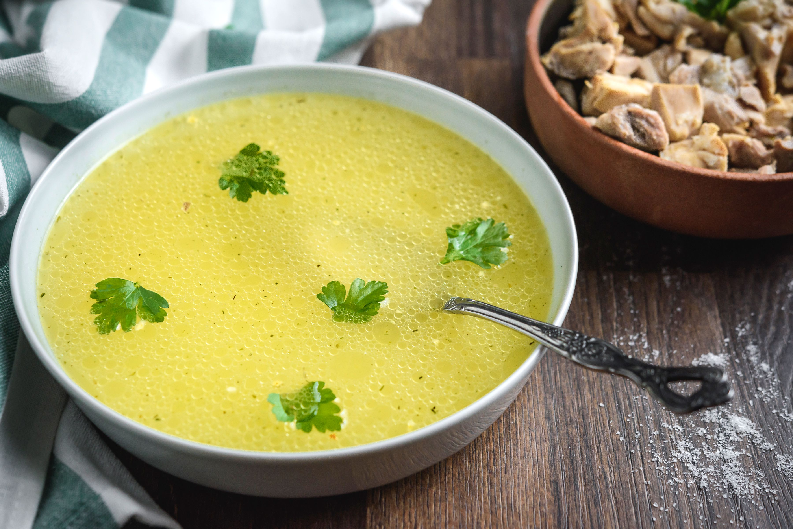

Soup

A healthy, warm meal. Nutritious and it fills you pretty well. Perfect all around meal.
Ingridients:
- Chicken
- Brokkoli
- Onion
- Salt
- Pepper
Steps:
- Chop chicken, brokkoli and onion into bite-size pieces.
- Drop chopped meat and onions into a pot, salt and pepper to your liking, add water so it completely covers the ingridients.
- Set your pot on a stove, cook on high heat till water boils, then lower the heat and cover it with a lid.
- Turn off the stove, let the soup cool for a minute or two, stir and enjoy!
Note:
I like to separate broth from boiled veggies and chicken once it all cooked. Then i pour it into a cup and drink it like a tea.
It's honestly up to you, but whatever you do, do not throw the broth away, it contains all the vitamins it drained from veggies.